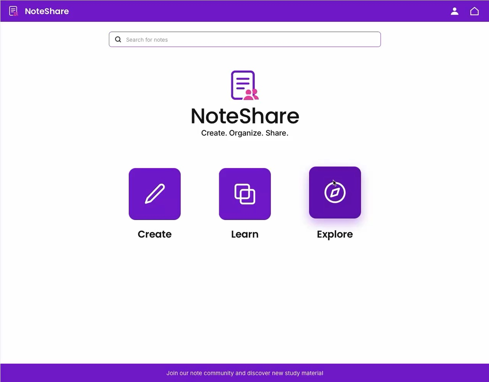
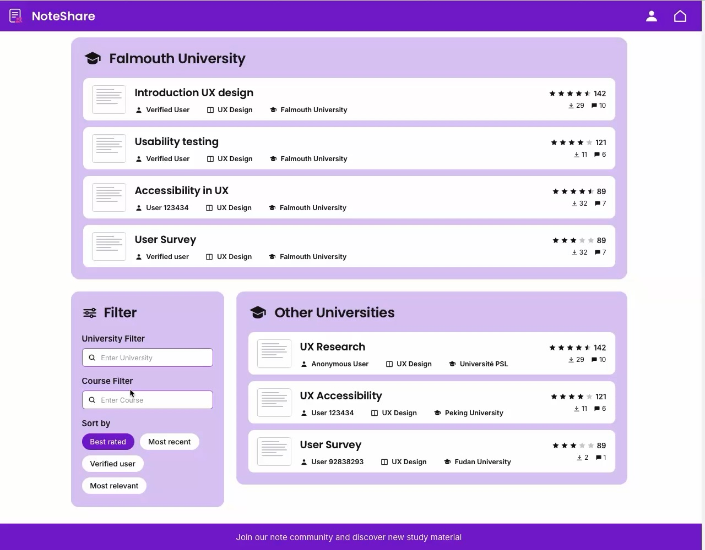
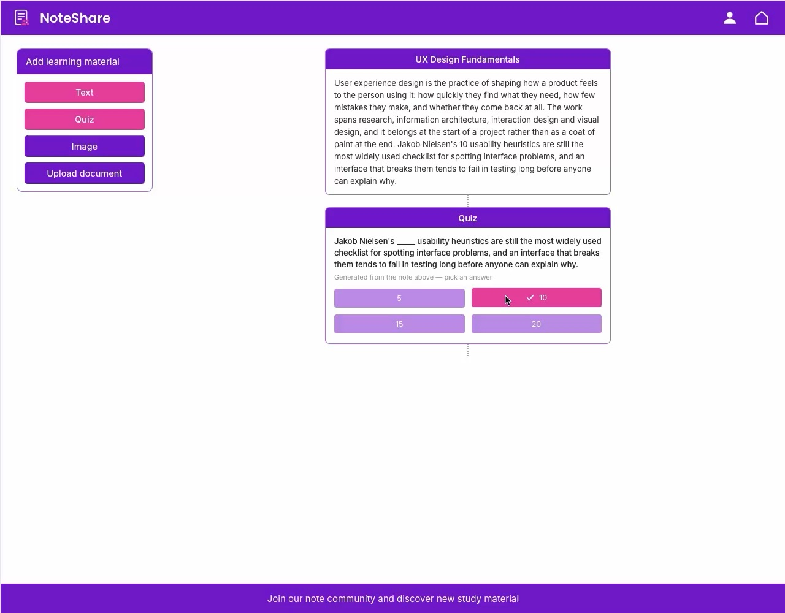
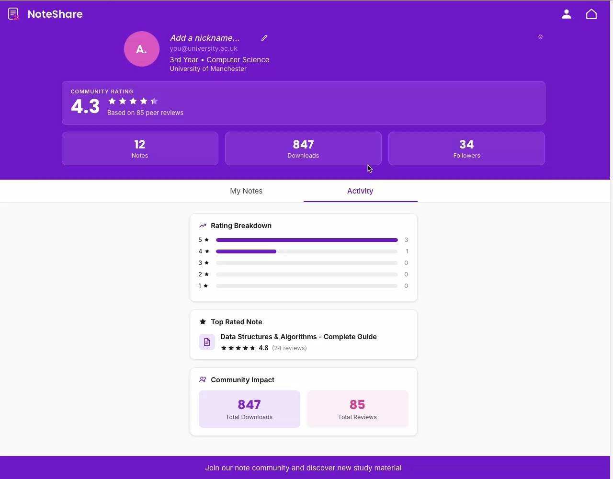

Case study — Digital product
NoteShare
Students make notes constantly, and almost all of it stays private. NoteShare turns peer-generated study material into something you can find, judge and actually learn from — rather than something scattered across chat groups and personal drives.

The problem
Higher education students use a wide range of study strategies, but they struggle to find learning material they can rely on. They write notes, but those notes stay private, even though they would be useful to everyone else studying the same topic.
Peer-made material is genuinely valuable, but when you find some, you have no way of telling whether it is any good. The bottleneck is not supply. It is trust.
The education technology market was valued at USD 123.7 billion in 2026 and is projected to reach USD 470.7 billion by 2035, with higher education accounting for 45% of it — and online learning alone growing at over 19% a year to 2030. Meanwhile no technology has replaced being in a room with other people, which is exactly where a collaborative layer has something to offer.
269mstudents in higher education worldwide in 2024, up from 100 million in 2000
Almost halfof students find it hard to clear doubts or follow online lecture material (Kumari et al. 2021)
User needs
Students lose their own notes. Storage is split across platforms and organised badly, so older material is hard to retrieve when it is needed.
AI is already part of studying — summarising, brainstorming, feedback — but nobody fully trusts it. It saves effort and creates doubt at the same time.
Peer notes are trusted when the author is known. When they are not, students want ratings, reviews and some record of the contributor before relying on them.
People will share to help peers — and share considerably more when there is recognition, reciprocity or some other form of reward.
Two things from the wider research shaped what we built. How students engage in class affects how much they retain, and gamified or active elements — quizzes in particular — improve on passive reading. And collaborative note-taking itself adds value: better writing, deeper learning, and a lighter load than listening, reading and writing all at once.
The problem statement
Higher education students need a more effective way to discover, evaluate, share and use reliable peer-generated study materials that support active and effective learning.
Designing for trust
The competitive analysis showed something useful: creation, selective sharing, peer review and rating all exist somewhere — just never together. That gap is where we positioned the product.
Sharing, but inside private workspaces. Nothing can be reviewed or rated by anyone outside them.
Creation and organisation done well, with no peer layer at all.
Sharing, commenting and rating together — but only on notes pinned to one lecture slide, with no route to material from other cohorts or institutions.
So NoteShare puts both halves in one place: you write your own notes, and you meet, review and rate other people's as an ordinary part of studying. A shared note is published, ranked by popularity and open to comment from the students using it — the kind of interactive, collaborative engagement associated with better learning and retention.
Sixteen seconds through the loop: filter the explore view down to a course, open somebody else's note, turn it into a quiz, then build one of your own out of text, image and quiz blocks.

Filter by university and course, then sort by best rated, most recent or verified user. The rating sits on the card, not behind a click.

A note is built from blocks — text, quiz, image, document. The quiz block is what turns a set of notes from something you read into something you practise.

Contributors carry a public record: a community rating built from peer reviews, plus download and follower counts. Reputation is the trust mechanism.
Future developments
Connecting students with the people whose notes they are using, for one-to-one or group sessions built on material they already share.
Course material and sharing running through the systems that already exist.
Summarising, quiz generation and personalised recommendations.
NoteShare is not a place to store notes. It is a space where students share what they know, find what they need, and support each other through the parts of studying nobody sees.